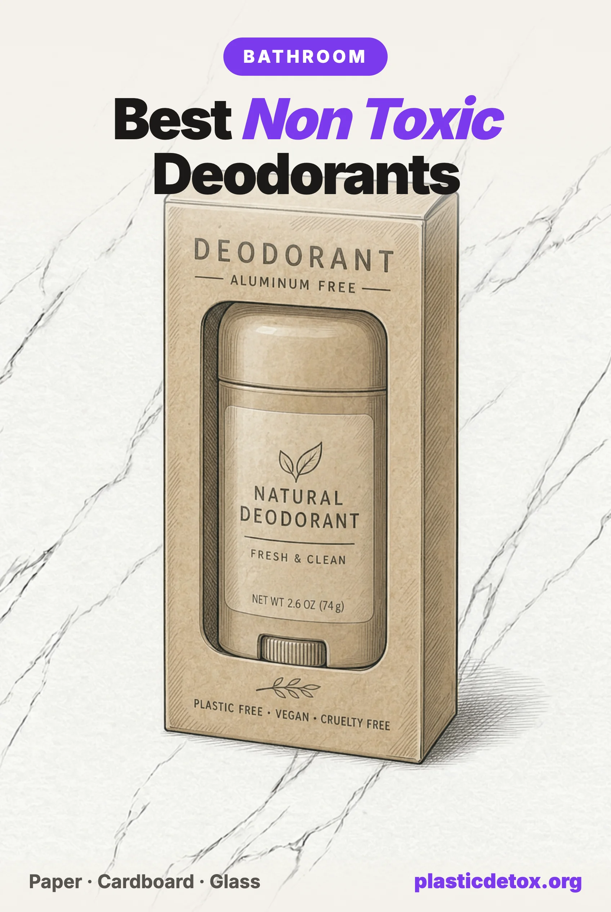

Best Non Toxic Deodorants: Why Packaging Matters as Much as the Formula (2026)

The 30 Second Summary
- Most non toxic deodorants are oil and wax pastes, and fat is the strongest extractant a plastic container can hold. A 2023 lab study on cosmetic packaging found oily simulants pulled markedly more chemicals out of plastic than water based ones, up to 165 compounds, 43 of them endocrine disrupting. Every pick below ships in paper, cardboard or glass instead.
- Our top pick is the Little Seed Farm Deodorant Cream. Every scent ingredient named down to the essential oil, in a glass jar, and the strongest review record of anything in this article at 4.6 stars on 11,403 ratings.
- The HiBAR Fragrance Free Sensitive Deodorant is a stick pick. Coconut oil, shea and arrowroot with magnesium hydroxide, no baking soda, in a plastic free cardboard tube.
- For a second cream option, the EcoRoots Sensitive Deodorant Cream ships in a glass jar with a metal lid, so nothing plastic touches it at all.
- Skip aerosol antiperspirants entirely. In 2021 and 2022, benzene from the propellant, not the deodorant, triggered recalls of Old Spice, Secret and Suave aerosols.
The Same Formula, Two Different Tubes
Two deodorant sticks, both marketed as clean, both aluminum free, both built on the same base ingredient: coconut oil, thickened with a starch and a wax, buffered with magnesium hydroxide. One of them holds a Product Check verdict of good. The other holds careful. The formulas are close enough that you could swap one ingredient list for the other and barely notice. What is different is the tube: one is paper, the other is plastic.
That is not a quirk of our rating system, it is the actual finding of this article. Non toxic deodorant coverage online is almost entirely about the ingredient list, aluminum, baking soda, parabens, phthalate carrying fragrance. Nobody asks what the paste sits inside for the eight to twelve weeks between when it is manufactured and when the last swipe comes off the stick. We think that question matters as much as the ingredient list, because of what the paste is made of.
Why Fat Pulls Chemicals Out of Plastic
Food contact testing has used oil as its worst case simulant for decades, because fat is better than water at pulling additives out of a plastic surface it touches. A deodorant paste is exactly that kind of matrix: anhydrous, oil and wax based, sitting against the inside of a tube for months before it ever reaches skin. In 2023, a team of French researchers ran the test that nobody had run directly on cosmetic packaging before.
The study, published in the journal Polymers, filled eleven real cosmetic packaging materials, PET, polypropylene, styrene acrylonitrile and several grades of polyethylene, with six simulants meant to stand in for what different products actually are: acidic, neutral and alkaline water, a diluted alcohol, glycerin, and liquid paraffin, an oily stand in for a balm or a cream. After a month at 50 degrees Celsius to accelerate the aging, the aqueous simulants had extracted almost nothing with hormonal activity. The oily and viscous ones told a different story: paraffin was the strongest extractant of antiandrogenic chemicals of anything tested, and glycerin pulled out the most estrogenic activity. Across the full set the researchers identified 165 chemicals migrating from the packaging, 43 of them classed as endocrine disrupting compounds, including a phthalate, a UV filter, and a plastic degradation byproduct called 2,4-di-tert-butylphenol that showed up repeatedly regardless of which polymer held it. Their own conclusion: cosmetic contact plastics "were found to be non-inert, particularly when they came into contact with viscous oily paraffin and glycerin formulations." A companion study from a different lab, using thermal extraction and pyrolysis GC-MS directly on packaging samples rather than simulants, independently found 35 extractable compounds in the same polymer families, including eight separate phthalates. Two different methods, the same answer: an oil based paste and a plastic tube is not a neutral pairing.
Nobody has run this exact test on a deodorant stick specifically. What we can say is that the packaging science that has been done, on cosmetic containers, using exactly the anhydrous oil and wax matrix a deodorant stick actually is, points the same direction every time. That is the reasoning behind everything that follows.
The Five Checks We Run on Every Deodorant
Every verdict on this site, from the Product Check tool to the Top 100, comes from the same five checks. Deodorant is a good illustration of why we never skip any of them:
Check 1: The Formula
Strip the marketing and most non toxic deodorant formulas cluster around the same recipe: a fatty base, usually coconut oil or a fractionated version of it, thickened with a starch like tapioca or arrowroot and a wax like candelilla or beeswax, buffered against odor causing bacteria with magnesium hydroxide, magnesium carbonate or zinc ricinoleate, sometimes with baking soda added for extra odor control. That last ingredient is a genuine fork in the road: baking soda is the most effective odor neutralizer in this category, and it is also the single most common cause of a rash under the arm, a real allergic response for a meaningful minority of users, not a texture complaint. Every pick in this article is baking soda free for that reason.
The other formula question is what "fragrance" is hiding. Several of the brands we researched name every scent ingredient, an essential oil by its Latin name, on the label. Others print a single word, fragrance or parfum, that can legally stand in for dozens of undisclosed compounds. We treat that word the same way everywhere on this site: as a formula that failed to disclose, not as a formula we can call clean. It caught two of the brands in our scorecard below.
Check 2: The Packaging
Here is the check most non toxic deodorant coverage skips entirely, and it is where the science above earns its keep. A deodorant stick or cream is anhydrous: no water, all oil and wax, sitting in direct contact with its container from the day it is molded to the day the last swipe comes off. That is close to the worst case scenario the 2023 packaging study tested. So the container material is not a sustainability detail, it is a second exposure question sitting right next to the ingredient list.
The plant based plastic point is worth sitting with, because it is the mislabel we ran into most often researching this article. A tube made from sugarcane ethanol instead of petroleum feedstock is a real, verifiable manufacturing difference, and it is also, chemically, polyethylene: the same polymer, the same additive package, the same behavior against an anhydrous oil paste, as any other plastic tube. A bio based feedstock changes where the carbon came from. It does not change what the plastic does once a coconut oil deodorant has been sitting against it for two months in a warm bathroom. We flag this explicitly because "plant based" and "aluminum free" printed near each other on a package read, at a glance, like "plastic free," and they are not the same claim. One brand we researched for this article is the clearest example; see Brands We Did Not Pick below.
Check 3: Independent Tests
Deodorant has its own independent testing history, separate from the packaging question. Mamavation, the environmental health watchdog whose organic fluorine testing we cite across this site, ran a round on deodorants specifically and found evidence of PFAS, the forever chemicals linked to hormone disruption, in 6 of 15 products tested, including mainstream names like Dr. Teal's and Secret Lavender. Two of the brands that came back clean, Truvani and Bello Tallow, are not brands we feature here for other reasons, but the clean result stands on its own. None of our three picks below appeared in the flagged list, and we searched Mamavation, Lead Safe Mama, Consumer Reports and Valisure specifically for each one before featuring it. We come back to independent testing again in the aerosol section, because the biggest deodorant testing story of the last five years was not about PFAS at all.
Checks 4 and 5: Lawsuits and Recalls
Two live examples from this category show why we treat an active lawsuit as a hard gate rather than a footnote, and why we distinguish an unresolved allegation from a proven finding.
In December 2025, a class action was filed against Unilever over Dove Men's 0% Aluminum deodorant, alleging that a product marketed with a "no alcohol" claim in fact contains benzyl alcohol. Gardner v. Unilever United States Inc., filed in the Eastern District of New York, is a labeling case, not a contamination case, and it remains pending as of this writing with no finding against the company. We hold the product at skip anyway, on the same rule we apply everywhere: a filed suit over the exact product caps the verdict until it resolves, whichever way it resolves. Separately, Native's deodorant sticks carry a pre litigation PFAS investigation over marketing language calling its products clean, an allegation rather than a finding, which caps the product at careful under the same rule. Neither example is a proven safety failure. Both are reasons to wait rather than to feature.
The Scorecard
Every brand we researched for this article, against all five checks. Flagged means an issue on that specific front, not necessarily a safety violation.
| Brand | Formula | Packaging | Independent tests | Lawsuits & recalls | Verdict |
|---|---|---|---|---|---|
| Little Seed Farm | Pass | Pass, glass jar | None found, checked | Pass | Good, 4.6★/11,403 |
| HiBAR (Fragrance Free) | Pass | Pass, cardboard tube | None found, checked | Pass | Good, 4.4★/207 |
| EcoRoots | Pass | Pass, glass jar | None found, checked | Pass | Good, 4.3★/2,560 |
| Ethique | Pass | Pass, paper tube | None found, checked | Pass | Good, but 3.9★/60 ratings |
| Each & Every | Pass | Fail, polyethylene tube | Unassessed | Pass | Careful |
| Wild | Undisclosed parfum | Pass, paper refill | Unassessed | Pass | Careful |
| Native | Undisclosed fragrance | Fail, HDPE tube | Unassessed | Pre litigation PFAS claim | Careful |
| Dove Men's 0% Aluminum | Unassessed | Unassessed | Unassessed | Active class action | Skip |
| CRYSTAL Roll-On | Pass | Pass, aqueous in plastic | Certified, but unresolved Prop 65 lead warning | Pass | Careful |
| Hey Humans | Named oils, but also undisclosed Parfum | PLA lining, not inert | Unassessed | Pass | Careful |
Every brand in this table now has a current entry in our Product Check tool. Type any deodorant brand in there for the verdict, and the reasoning behind it, in ten seconds.
Our Picks
All three cleared every check: a fully disclosed formula, packaging that puts nothing into what it holds, no independent test flags we could find, and a clean lawsuit and recall record. All three also have a real ownership record behind them, not just a clean construction: Little Seed Farm sits at 4.6 stars on 11,403 Amazon ratings, the strongest of any product in this article, HiBAR at 4.4 stars on 207, and EcoRoots at 4.3 stars on 2,560.

Little Seed Farm Deodorant Cream, Blue Tansy Rose
Tapioca and jojoba oil with magnesium hydroxide, scented only with named cedarwood, geranium, rose and blue tansy oils, in a glass jar with a metal lid and wooden scoop. Not an antiperspirant.
View →
HiBAR Fragrance Free Sensitive Deodorant
Coconut oil, shea and arrowroot with magnesium hydroxide and zinc ricinoleate, baking soda free, plastic free cardboard tube. Not an antiperspirant.
View →
EcoRoots Sensitive Deodorant Cream
Coconut oil and arrowroot with magnesium hydroxide, scented only with named basil and vetiver oils, in a glass jar with a metal lid. Applied with fingertips.
View →If you want a light scent instead of fragrance free, HiBAR's Sensitive line was recently reformulated: the Pink Iris & Neroli and Sea Moss & Aloe scents share the exact same cardboard tube and base formula as our pick above, scented only with named lime seed oil rather than a fragrance blend. We almost missed this: Amazon's own product description text for both still names a generic "Natural Fragrance" left over from an older formula, and only the current photographed label shows the reformulation. HiBAR's other, non Sensitive scented line (Bergamot & Cedar and similar) is a different, older recipe that still lists Natural Fragrance for real, so it stays out.
We looked hard for a third format, a liquid roll-on, and found one with real numbers behind it: CRYSTAL Mineral Deodorant Roll-On sits at 4.3 stars on 18,200 ratings and is the only deodorant line ever to win the Clean Label Project's independent Purity Award. It is not a pick here, for a reason unrelated to reviews or construction; see below.
The Brands We Did Not Pick
Ethique Minimalist Unscented Deodorant Stick
This one passes every check above: zinc oxide and magnesium hydroxide in a tapioca base, no fragrance of any kind, baking soda free, in a home compostable paper tube. We almost featured it on that record alone, then checked the actual Amazon listing and found it sitting at 3.9 stars on 60 ratings, with recurring complaints about a hard, sticky application and inconsistent effectiveness. A clean formula and inert packaging tell you a product is not sending anything harmful into your body. They do not tell you it works, and we do not feature a product only reviewers are lukewarm on. We will revisit this if the rating moves.
CRYSTAL Mineral Deodorant Roll-On
This is the liquid option a lot of readers ask for, and it has the largest review base of anything in this article: 4.3 stars on 18,200 Amazon ratings, decades on the market, and the only deodorant line to win the Clean Label Project's independent Purity Award. Its formula, water, potassium alum, sodium bicarbonate, benzoic acid and zinc gluconate, is fully disclosed and aqueous rather than oil based, which is why we do not treat its standard plastic roll-on bottle as a packaging failure here; the same 2023 study behind this article found aqueous simulants pulled out negligible endocrine disrupting activity compared to oily ones. What keeps it out of the picks is different: the current Amazon listing carries a California Proposition 65 warning naming lead. We searched the California Attorney General's Prop 65 notice and settlement database and found nothing naming this brand, so this reads as the manufacturer's own disclosure rather than a litigated finding, and we could not find an independent lab test putting a real number on it. Potassium alum is worth a separate note: it is potassium aluminum sulfate, a different aluminum salt than the aluminum chlorohydrate used in antiperspirants, working by a surface level, astringent mechanism rather than plugging sweat ducts, and this site does not treat alum itself as a hazard. The lead question is the only thing holding this back, and we will feature it the moment that question has a real number attached.
Hey Humans Deodorant, Lavender Vanilla
A reader sent us this one, and it is a genuinely close call: 4.3 stars on 2,797 Amazon ratings, a mostly paper tube, and an ingredient list that names real essential oils, lavandin, basil, geranium and rosemary. It still falls on the same rule that caught Wild: the full label also lists "Fragrance (Parfum)" as its own separate ingredient, alongside the named oils rather than instead of them, and we treat that word as undisclosed everywhere on this site regardless of what else is named. The packaging has its own asterisk too. The tube body is FSC certified paper, but the brand's own FAQ states the cap and base are lined with PLA, a corn based bioplastic, to stop the paste from leaking through, so the formula is not touching paper alone. PLA is a different polymer than the plastic tubes flagged elsewhere in this article, and we have not seen migration data specific to it, but it is still a plastic in direct contact with an oil based paste, not the inert material the "paper tube" framing implies. Drop the Parfum and this is a strong candidate.
Each & Every
We want to be fair to this one, because the ingredient list is genuinely good: coconut oil, tapioca starch, magnesium hydroxide and magnesium carbonate, nothing on our hazard list, no undisclosed fragrance. It is capped at careful for exactly one reason, the packaging check above: the stick ships in a twist up tube made from sugarcane derived polyethylene, still the same polymer as a petroleum tube once an oil based paste has been sitting against it for months. If a paper or cardboard tube in the same formula family existed, we would feature it instead.
Wild
Wild's refillable system is the packaging answer done well: a reusable case holding a bamboo pulp and bagasse cartridge, plastic free and home compostable, so the deodorant itself never touches plastic. The formula is where it falls short. The ingredient list includes "Parfum" alongside otherwise disclosed ingredients, and we treat that word the same everywhere on this site, as undisclosed rather than as safe by default. Worth knowing separately: the reusable outer case and its twist mechanism do contain some plastic components, even though the refill itself does not.
Native
Native's classic sticks ship in an HDPE plastic tube, the ingredient list hides its scent behind the word "fragrance" rather than naming it, and the brand carries a pre litigation investigation into whether its "clean" marketing claims hold up against PFAS testing, an allegation, not a finding. Any one of those would be a caution on its own. Together they keep it out of our picks, on a formula that is otherwise built on the same coconut oil and shea butter base as our HiBAR pick above.
Dove Men's 0% Aluminum
Filed in December 2025, a proposed class action alleges this deodorant, marketed with a "no alcohol" claim, contains benzyl alcohol. The case is pending in federal court with no finding either way as of this writing. We hold it at skip under our standard rule: an active suit naming the specific product caps the verdict until it resolves. This is a labeling allegation, not a contamination finding, and we will revisit it if the case is dismissed.
A Note on Aerosol Antiperspirants
Everything above is about what happens when an oil based paste sits against a solid container. Aerosol antiperspirants are a different packaging problem entirely, and it is worth a section of its own because it is the largest deodorant safety event of the last five years and it had nothing to do with any deodorant's ingredient list.
| Date | Event |
|---|---|
| Nov 2021 | Valisure petitions the FDA after finding benzene, a known carcinogen, at up to nine times the 2 ppm limit in over half of 108 aerosol antiperspirant and body spray batches tested across 30 brands. |
| Nov 2021 | Procter & Gamble voluntarily recalls 17 Old Spice and Secret aerosol products, lots with expiration dates through September 2023. |
| Early 2022 | HRB Brands recalls Sure and Brut aerosol sprays for the same benzene contamination. |
| Apr 2022 | Unilever recalls Suave antiperspirant aerosols after benzene turns up in testing. |
| May 2022 | Procter & Gamble reaches a tentative settlement of the resulting class actions. |
The mechanism matters: benzene did not come from any brand's fragrance or active ingredient, it came from the hydrocarbon propellant that pressurizes the can, isobutane and similar compounds that can carry benzene as a manufacturing byproduct. A deodorant with an otherwise spotless ingredient list can still deliver benzene to your underarm if the can it is packaged in has a contaminated propellant, which is exactly what happened to well established, mainstream brands across the industry, not one bad actor. It is the cleanest illustration we have found that packaging is not a side issue in this category. We do not recommend any aerosol antiperspirant, regardless of the ingredient list on the label, and every pick in this article is a solid stick or cream instead.
Frequently Asked Questions
Why does deodorant packaging matter as much as the ingredient list?
Because most non toxic deodorants are oil and wax pastes, coconut oil, shea butter, candelilla wax, and fat is the most aggressive extractant a plastic container can hold. That is not a guess: a 2023 study in the journal Polymers tested eleven cosmetic packaging materials against six simulants and found that oily and fatty simulants pulled markedly more chemicals out of the plastic than water based ones did, up to 165 compounds total, 43 of them classed as endocrine disrupting. Food contact testing has used oil as its aggressive simulant for the same reason for decades. A deodorant sits against skin for hours a day, so the container the oily paste touches for months on the shelf is not a footnote, it is a second formula question.
Are sugarcane or bioplastic deodorant tubes actually plastic free?
No, and this is the single most common mislabel we found researching this article. A bioplastic tube is made from plant ethanol instead of petroleum, which lowers its carbon footprint, but it is chemically the same polyethylene either way, with the same additives and the same behavior against an oily formula. Several products we checked, including one already recommended elsewhere on this site under a prior review, had their packaging misread as aluminum free or plastic free because a marketing phrase used that word near the ingredient list rather than because anyone checked what the tube was actually made of. If a listing does not name the container material outright, paper, cardboard, glass or metal, assume it is plastic.
Should I worry about aerosol antiperspirants?
The risk there is not the formula either, it is the propellant. In November 2021 Valisure told the FDA it had found benzene, a known carcinogen, at up to nine times the two parts per million limit in over half of 108 aerosol antiperspirant and body spray batches it tested across 30 brands. Procter & Gamble recalled 17 Old Spice and Secret aerosol products within weeks, and the same benzene problem turned up in other brands' aerosols into 2022, including a Suave recall that April. The deodorant itself was not the source; the hydrocarbon propellant that sprays it out of the can was. It is the reason we do not recommend any aerosol antiperspirant, clean ingredient list or not: the delivery format is its own hazard, independent of what is dissolved in it.
Is aluminum in deodorant actually dangerous?
The honest answer is that the major health bodies who have looked, including the National Cancer Institute, say the evidence does not currently support a link between aluminum based antiperspirants and breast cancer or Alzheimer's disease, and we are not going to claim otherwise. Aluminum salts work by physically plugging sweat ducts, which is a real, well understood mechanism, and it is a personal choice rather than a safety mandate to avoid it. Our picks in this article are aluminum free because they are also baking soda free, fragrance disclosed and packaged in something inert, not because we are asserting aluminum itself is unsafe. Regulated does not mean risk free, and undecided does not mean dangerous; we try not to round either one into a stronger claim than the evidence supports.
What about liquid roll-on deodorants, like Crystal?
A liquid roll-on sidesteps this article's central packaging problem almost entirely, because it is water based rather than an oil and wax paste, and the 2023 study behind this article found aqueous formulas pull out far less from plastic packaging than oily ones do. CRYSTAL Mineral Deodorant Roll-On is the strongest example we found: 4.3 stars on 18,200 Amazon ratings, a fully disclosed potassium alum formula, and the only deodorant line to hold the independent Clean Label Project Purity Award. We are not featuring it yet for one specific, unresolved reason: the current listing carries a California Proposition 65 warning naming lead, and we could not find an independent lab result putting a real number on that. Potassium alum is a different aluminum salt than the aluminum chlorohydrate used in antiperspirants and this site does not treat alum itself as a hazard; the open question is the lead disclosure, not the alum.
Related Articles
- Microplastics in Cosmetics and Personal Care
The full picture of where plastic hides in your bathroom routine. - How to Avoid BPA and Phthalates
The packaging chemicals behind this article's central science, explained from the start. - The Plastic Inside Your Glass Jar Lid
The same fat, heat and time mechanism, in the lid on your pantry shelf. - Personal Care 101
The swaps that matter most across your whole bathroom, in order of impact. - Clean Products That Aren't
More brands whose marketing language outruns what is actually in the package. - Best Plastic Free Food Storage Containers
The same oil and plastic problem, on the other side of the kitchen.